Dialogue System
This is a branching, modular dialogue system.
Core Concept: Create an infinite branching dialogue system that can rival that of CRPG's such as Baldur's Gate 1 & 2, Pathfinder Kingmaker and Wrath of the Righteous, Neverwinter Nights and Pillars of Eternity 1 & 2.
[Posted: 28/09/2025]
DialogueComponent¶
The DialogueComponent is the brains behind the whole system. This can be applied to any AActor, APawn or ACharacter that the player can converse with. This controls the flow of the dialogue via a DataTable.
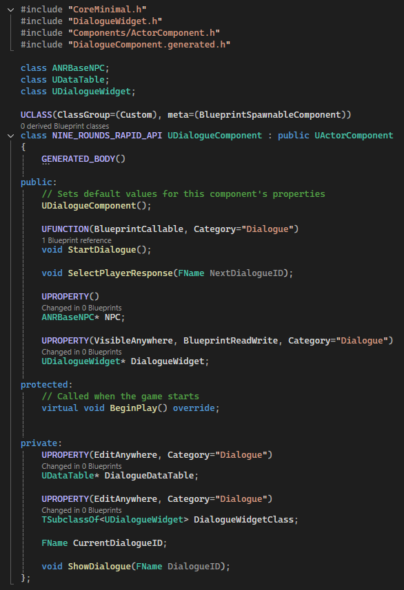
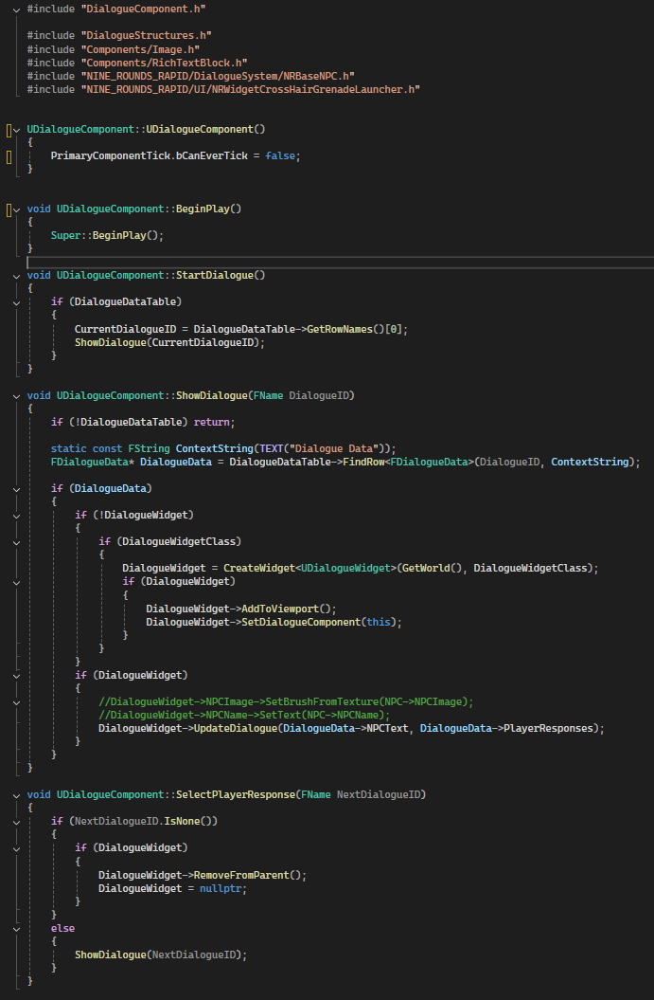
The DialogueComponent holds information to the DialogueWidget, DialogueDataTable and the CurrentDialogueID. It also had information of the NPC that it is associated with, however that was removed, and I just didn't remove the commented out code, or the NPC line from the header file before the screenshot was taken.
StartDialogue() being BlueprintCallable makes this system extremely modular with blueprints, allowing it to be attached to any actor in the game at all, making the system modular to apply.
SelectPlayerResponse(FName NextDialogueID) is what handles the branching system entirely. This gets the DialogueID line from the DataTable that is tied to the player response. If the player response DialogueID is 'none' it ends the conversation, and closes the dialogue window.
ShowDialogue(FName DialogueID) This is where the dialogue is pulled from the data table and shown to the player. If the dialogue data is nullptr, nothing will happen. If the DialogueWidget doesn't exist, it will create one, then update the dialogue.
This works by finding the row 'DialogueID' in the DataTable, which must be named appropriately to the PlayerResponse DialogueID.
DialogueStructures¶
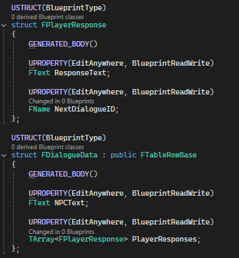
The dialogue structures are the DataTable and the player's responses. The FPlayerResponse struct contains the ResponseText, which is the text that will appear on the button that the player has the option to press to continue the dialogue, and NextDialogueID which is where the dialogue will go if the option is selected. FDialogueData contains the NPC's dialogue, and an array of FPlayerResponse, this allows the player to have multiple options for each part of the dialogue, this could effectivly be infinite, but I'm sure there's a limit.
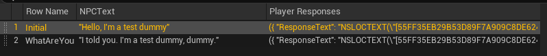
This is an example of the dialogue data table that can hold the infinitely branching dialogue. The Row Name is what MUST match the NextDialogueID of the PlayerResponse. In this case, one of the responses from the player must lead to the NextDialogueID of 'WhatAreYou'.
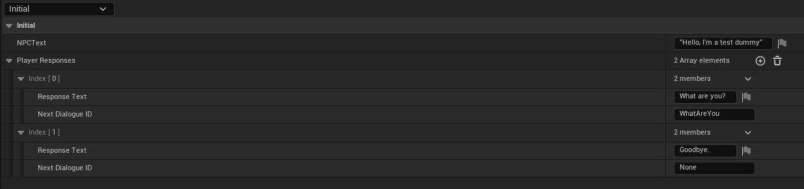
This is the whole information for row Initial, which is the greeting to the player. The player is given two options here, to ask the NPC what they are, or to just say goodbye. Asking the NPC 'What are you?' leads to the NextDialogueID of WhatAreYou, like what was stated above, this matches the next row. Also the player can say 'Goodbye' which leads to NextDialogueID of 'none' which looking back to the DialogueComponent, you can see that 'none' ends the dialogue.
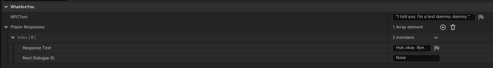
This screenshot is a little redundant, but it's a way to show how the dialogue can be simply ended by giving the player one choice. The Response Text could also be set to something like 'End Conversation', or 'End Dialogue' too.
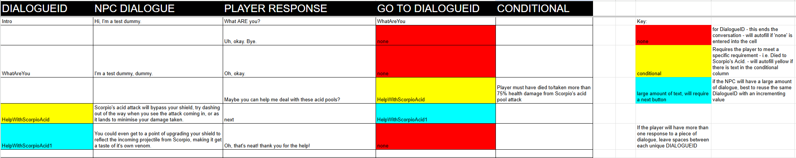 This sheet is pretty much a way for pre-planning any form of dialogue that will go into any of the NPC's. The one that is shown is an example, that includes the conditional's, which are yet to be implemented, however they are already planned out and are a work in progress. The sheet reflects how simple it is to populate the data, and allows dialogue planning to be thought out outside of the engine, in a similar methodology to what is required in editor.
Dialogue Response Button¶
This widget is pretty much all that is needed for handling the player's responses. It's set up be created as many times as required based on the amount of responses that the player will have. This is handled via the main dialogue widget itself. 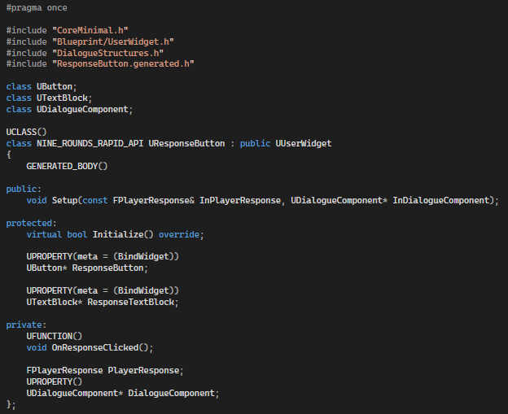
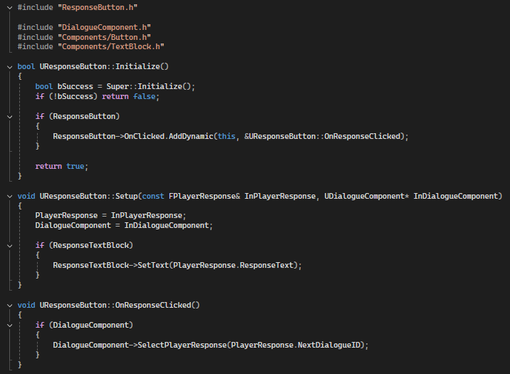
Setup(const FPlayerResponse& InPlayerResponse, UDialogueComponent\* InDialogueComponent) is how each button that is created gets the correct information to display. The ResponseTextBlock's text is set to be the ResponseText from the struct, however this does need to be passed into the button which is done in the main Dialogue Widget.
OnResponseClicked() When one of the response buttons has been pressed by the player, it tells the DialogueComponent to move on to the NextDialogueID, progressing, or ending the conversation.
With this response button I opted to use URichText over a UTextBlock as we are using formattable text throught most of the informationals, so it ties in nicely and allows us full creative reign with customising what each button displays. If we wanted an option to be shown to the player that they don't yet have access to (which I don't think we'll do, but just as an example), we could set the text of it to red via the RichText and disable the button.
Dialogue Widget¶
This is everything that is seen by the player. The dialogue window, the NPC's name, what they're saying, an image of the NPC and the player's responses.
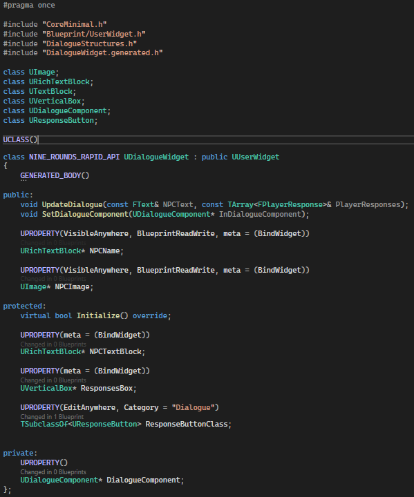
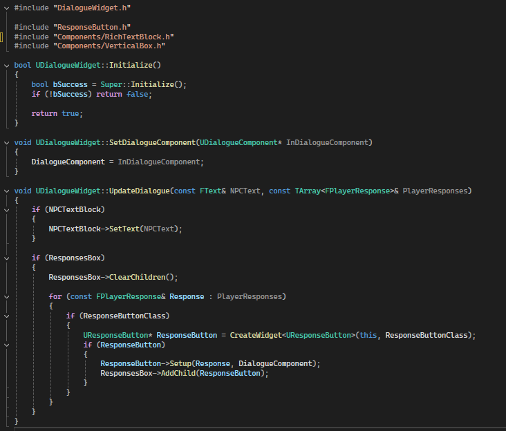
UpdateDialogue(const FText& NPCText, const TArray<FPlayerResponses>& PlayerResponse) This is absolutely everything that is required of this widget. This updates the NPC's dialogue and the player's responses. It sets hte NPCTextBlock, which is the dialogue to be the NPCText, which is provided by the DialogueComponent.
It also checks for the ResponsesBox, which is just a VerticalBox in the widget that holds all of the player's responses. It clears all of the widgets within the VerticalBox, then populates them based on the number of Responses in PlayerResponses. If there are 13 responses that the player could give, there would be 13 responses created by this function.
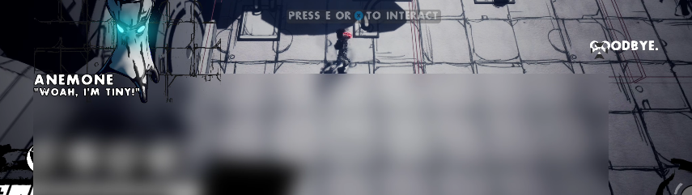
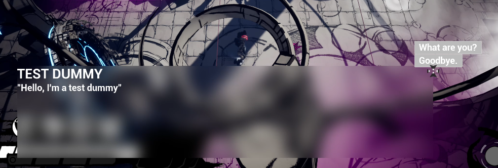
These two dialogue's are simple placeholders that show off the player being given one response, and multiple responses. All of the visuals for this widget are a work in progress but it is currently just to show it off that it works.
[Update - 29/09/2025]
Conditionals¶
These work in a way to check if the player has met a certain condition to unlock a new dialogue path. These can range from having certain items, weapons, credits and/or if the player has defeated, or has been defeated by certain enemies. Conditionals can be added as needed and currently is a quite small list, but can be scaled infinitely.
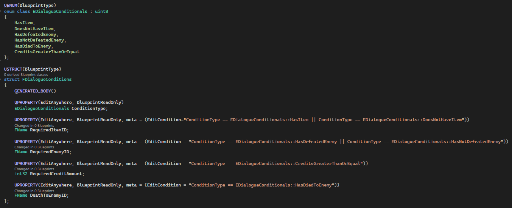
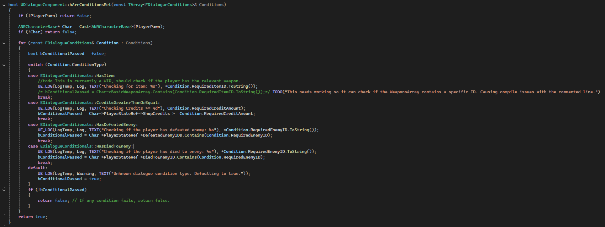
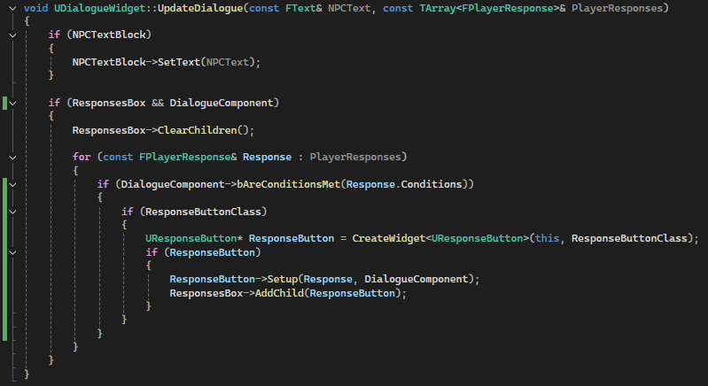
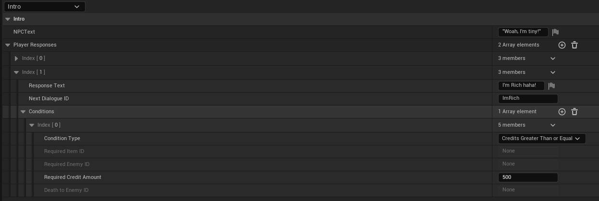
Code/in editor example of how the conditionals can work. In the engine example the Player Response 'I'm Rich haha' will only display if the player has 500 credits. Eventually this system will allow the NPC's to give the player rewards/sell items to the player.
The conditional can also check which enemies the player has defeated, and which enemies have defeated this player - the NPC's could then give insight into how to defeat the enemies, or one-run upgrades for credits that can provide resistances to said enemy that has defeated them etc etc..